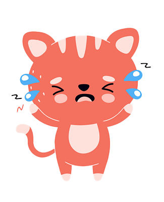

Top 10 Reasons to Adopt from an Animal Shelter
1. You save a life.
2. You help break the cycle of pet overpopulation.
3. You help stop cruelty in mass breeding facilities.
4. You take advantage of adopting an adult animal.
5. You adopt a pet who has received good care.
6. You support a valuable charity and community institution.
7. You pay less.
8. You encourage others to adopt animals from shelters.
1. You save a life.
2. You help break the cycle of pet overpopulation.
3. You help stop cruelty in mass breeding facilities.
4. You take advantage of adopting an adult animal.
5. You adopt a pet who has received good care.
6. You support a valuable charity and community institution.
7. You pay less.
8. You encourage others to adopt animals from shelters.
Check out this informational video about adoption.
Many pets end up homeless through no fault of their own, or even of their previous family. Rather, a lack of affordable and pet-friendly housing tops the list of reasons pets are surrendered to shelters. Pets adopted from shelters and rescue groups typically cost less than pets purchased or even acquired for free. Once you add in the cost of vaccinations, spay/neuter surgery, microchip, dewormer and other "extras" included in your adoption fee, you'll probably be surprised with the level of medical and behavioral care your new pet has received. While some shelter pets may have some behavioral or medical challenges, your local organization can help you find the right fit for your lifestyle and family.
